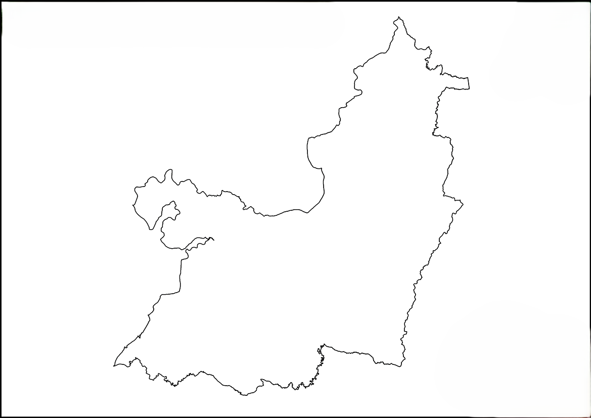

Total de prestadores1.248
El Producto de Datos
Visualiza y explora la información del sector
Servicio más comúnAlojamiento
Municipio con más registrosCali
Prestadores por tipo de servicio
- 22%: Alojamiento
- 10%: Cultura
- 8%: Ecoturismo
- 18%: Gastronomía
- 27%: Otros
- 15%: Transporte
Prestadores por municipio
Distribución en el Valle del Cauca

● Cali● Buenaventura● Yumbo● Buga● Jamundí● Palmira● Calima el Darién● Otros
Matrices claves
- 65% Alojamiento y gastronomía
- 35% Turismo cultural y recreativo
- 10% Ecosistema y naturaleza